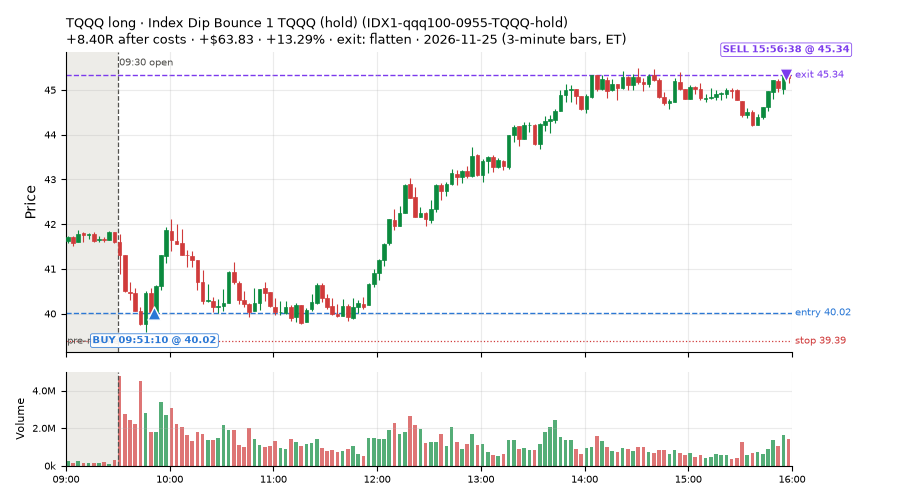
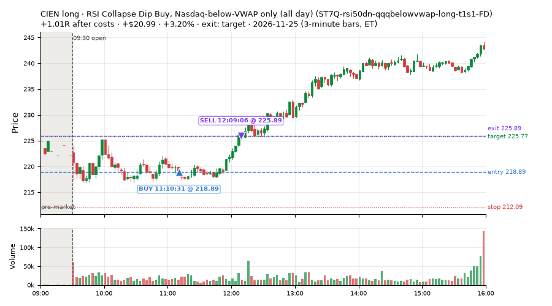
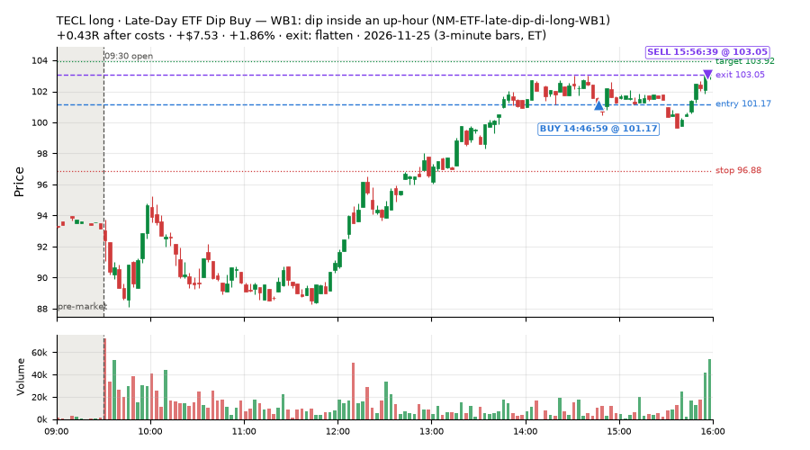
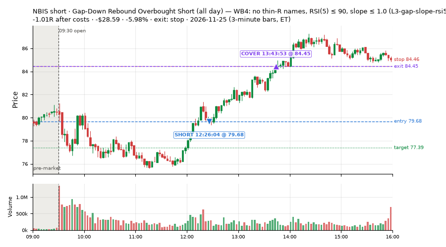
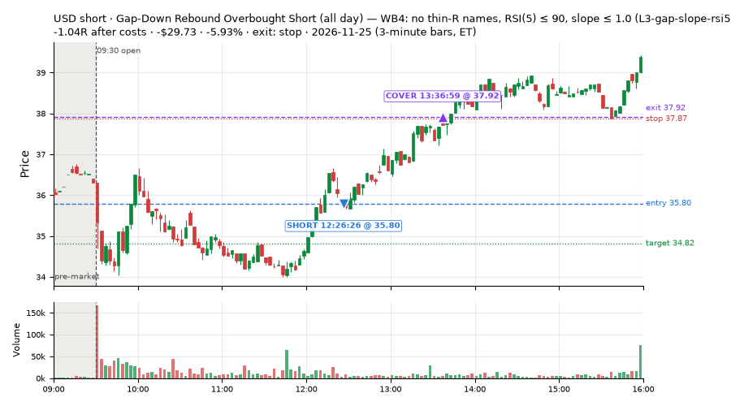
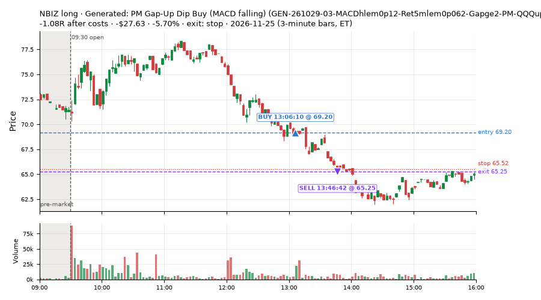
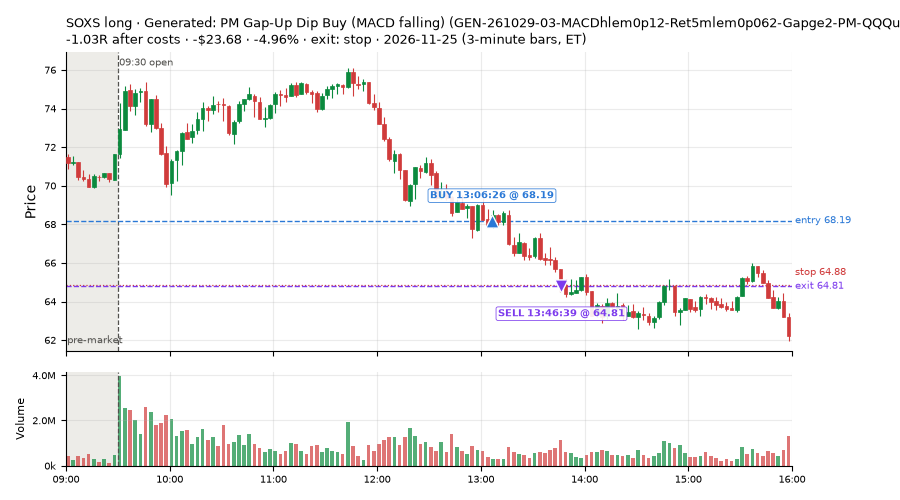
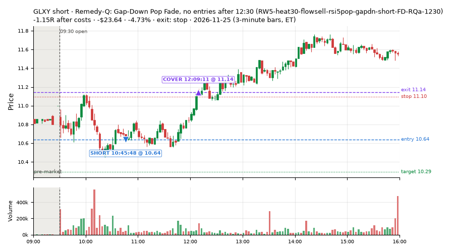

258 trades · win rate 12% · P/L $-1,894.72
PROBATION: no live setup has passed both locked test periods. 10 owner-directed setups added 2026-10-08 (MarcoFlow top 5 + 5 new), untested live. RW6G1 (RW6 + VWAP band guard) added 2026-10-09, probation.

| Symbol | Setup | Side | In | Out | Entry | Exit | Exit reason | % gained | P/L |
|---|---|---|---|---|---|---|---|---|---|
| TQQQ | Index Dip Bounce 1 TQQQ (hold) (IDX1-qqq100-0955-TQQQ-hold) | long | 09:51 | 15:56 | 40.02 | 45.34 | flatten | +13.29% | $63.83 |
| CIEN | RSI Collapse Dip Buy, Nasdaq-below-VWAP only (all day) (ST7Q-rsi50dn-qqqbelowvwap-long-t1s1-FD) | long | 11:10 | 12:09 | 218.89 | 225.89 | target | +3.20% | $20.99 |
| TECL | Late-Day ETF Dip Buy — WB1: dip inside an up-hour (NM-ETF-late-dip-di-long-WB1) | long | 14:46 | 15:56 | 101.17 | 103.05 | flatten | +1.86% | $7.53 |
| Symbol | Setup | Side | In | Out | Entry | Exit | Exit reason | % lost | P/L |
|---|---|---|---|---|---|---|---|---|---|
| NBIS | L3-gap-slope-rsi5hi-FD-WB4 | short | 12:26 | 13:43 | 79.68 | 84.45 | stop | -5.98% | $-28.59 |
| USD | L3-gap-slope-rsi5hi-FD-WB4 | short | 12:26 | 13:36 | 35.80 | 37.92 | stop | -5.93% | $-29.73 |
| NBIZ | GEN-261029-03-MACDhlem0p12-Ret5mlem0p062-Gapge2-PM-QQQup-hold-long | long | 13:06 | 13:46 | 69.20 | 65.25 | stop | -5.70% | $-27.63 |
| SOXS | GEN-261029-03-MACDhlem0p12-Ret5mlem0p062-Gapge2-PM-QQQup-hold-long | long | 13:06 | 13:46 | 68.19 | 64.81 | stop | -4.96% | $-23.68 |
| GLXY | RW5-heat30-flowsell-rsi5pop-gapdn-short-FD-RQa-1230 | short | 10:45 | 12:09 | 10.64 | 11.14 | stop | -4.73% | $-23.64 |








Signal to fill: median 2s, 90th percentile 3s (258 trades). Bars close each minute; the order follows the bar close.
Best excursion (MFE): median 0.19R; worst (MAE) median 1.01R. 60% of trades never got +0.25R in our favour; 4 reached +1R and still closed at or below 0.
| Symbol | Setup | Best R | Worst R | Closed R |
|---|---|---|---|---|
| PLTR | MF2-open-rsimidhi-flowsell | +1.56 | -1.16 | -1.11 |
| SKHY | MF2-open-rsimidhi-flowsell | +1.21 | -1.06 | -1.14 |
| GLL | GEN-261029-03-MACDhlem0p12-Ret5mlem0p062-Gapge2-PM-QQQup-hold-long | +0.85 | -1.31 | -1.28 |
| SBIT | GEN-261029-03-MACDhlem0p12-Ret5mlem0p062-Gapge2-PM-QQQup-hold-long | +0.89 | -1.23 | -1.19 |
| ZBRA | L3-gap-slope-rsi5hi-FD-WB4 | +0.67 | -1.07 | -1.33 |
| Entry time | Trades | Win | Avg R | P/L |
|---|---|---|---|---|
| 09:50-10:30 | 6 | 33% | +0.80 | $25.77 |
| 10:30-11:30 | 8 | 25% | -0.66 | $-37.75 |
| 11:30-13:00 | 78 | 1% | -1.04 | $-909.93 |
| 13:00-14:00 | 123 | 6% | -0.83 | $-992.41 |
| 14:00-16:00 | 43 | 44% | -0.01 | $19.60 |
| Setup | Trades | Win | Avg R after costs | Adj R (net of SPY) | Avg R ex-market (all sessions) | P/L |
|---|---|---|---|---|---|---|
| Stretched Below VWAP Bounce (far) (CWT13-vwapstretch-z075-long) | 5.0 | 0% | -0.36 | -0.52 | -0.36 (beta +1.07, n 65) | $-11.94 |
| Generated: Morning New-High Short (SPY down) (GEN-261019-08-NewHOD-Slope6ge0p03-DayRngVsPrevge1p5-AM-SPYdn-hold-short) | 2.0 | 50% | -0.37 | +0.94 | -0.86 (beta +0.58, n 6) | $-1.80 |
| Generated: Late Failed-Breakdown Pop Short — WB4: 14:30-15:00, pop >= 0.20 ATR, ADX(7) >= 44 (GEN-261023-09-ORBfailDn-Ret15mge0p54-LATE-BRvwgt0p7-holdtr-short-WB4) | 1.0 | 0% | -0.14 | -0.34 | – | $-0.32 |
| Generated: Open RSI Surge Short (wide day) (GEN-261026-08-RSIslopege19-Ret5mge0p063-DayRngVsPrevge1p2-OPEN-SPYup-holdtr-short) | 5.0 | 20% | -0.72 | -0.64 | +0.00 (beta -1.23, n 25) | $-38.06 |
| Generated: Lunch Failed-Breakdown Short (GEN-261027-08-ORBfailDn-FromPCATRlem0p96-LUNCH-QQQltm0p6-hold-short) | 18.0 | 0% | -1.11 | -0.28 | -0.36 (beta -0.55, n 69) | $-132.31 |
| Generated: PM Gap-Up Dip Buy (MACD falling) (GEN-261029-03-MACDhlem0p12-Ret5mlem0p062-Gapge2-PM-QQQup-hold-long) | 24.0 | 0% | -1.05 | -1.40 | -0.47 (beta -0.89, n 27) | $-283.82 |
| Index Dip Bounce 1 TQQQ (hold) (IDX1-qqq100-0955-TQQQ-hold) | 1.0 | 100% | +8.40 | +6.51 | – | $63.83 |
| Gap-Down Rebound Overbought Short (all day) — WB4: no thin-R names, RSI(5) ≤ 90, slope ≤ 1.0 (L3-gap-slope-rsi5hi-FD-WB4) | 193.0 | 13% | -0.70 | -0.46 | -0.19 (beta -1.09, n 222) | $-1,461.77 |
| Early Sellers, Mid-High RSI (MF2-open-rsimidhi-flowsell) owner-directed; holdouts once: Sep-Oct -0.108R n41, Apr-Jun +0.046R n171 | 4.0 | 0% | -1.10 | -0.76 | -0.26 (beta -1.42, n 20) | $-33.30 |
| Late-Day ETF Dip Buy — WB1: dip inside an up-hour (NM-ETF-late-dip-di-long-WB1) | 2.0 | 100% | +0.24 | +0.18 | +0.19 (beta +0.96, n 8) | $10.08 |
| Remedy-Q: Gap-Down Pop Fade, no entries after 12:30 (RW5-heat30-flowsell-rsi5pop-gapdn-short-FD-RQa-1230) | 2.0 | 0% | -1.14 | -0.54 | -0.49 (beta -0.83, n 10) | $-26.30 |
| RSI Collapse Dip Buy, Nasdaq-below-VWAP only (all day) (ST7Q-rsi50dn-qqqbelowvwap-long-t1s1-FD) | 1.0 | 100% | +1.01 | +0.62 | -0.12 (beta +0.85, n 20) | $20.99 |
Market direction (SPY, beta 1) accounted for $-537.09 of today's $-1,894.72; the rest ($-1,357.63) came from the setups themselves. Avg R net of SPY: -0.50 (incl. a hedge leg's cost; report only).
23 setups live today. Today: 548 signals, 258 taken, 0 lost because another setup held the symbol (0%). Since 2026-11-05 (15 sessions): 2354 signals, 982 taken, 25 lost to other setups (1%). Peak open positions today 124 of 400 slots. Earnings blackout removed 118 symbols before scanning.
Simulated playing time (not live): 1364 what-if trades of signals not taken, avg -0.12R, 46% winners; of them 25 lost to another setup (avg -0.11R).
Silent: IDX2-spy075-0945-3x-trail, IDX5-spy050-0945-3x-trail, LD4-st4-breadthup-t1s05-long, LD8-spy-dip030-breadthturn-spxl-holdtr-long, GEN-261019-07-VolRatioge2-UpWickge0p59-DayRngVsPrevge1p5-LATE-SPYgt0p5-t05s1-long, GEN-261028-05-EMAdChgge0p093-ORLdistlem0p42-LAM-QQQgt0p6-holdtr-long
| Prio | Setup | Today sig / taken | Sessions | Signals / taken / trades | Taken/day | Expected/day | Lost to other setups | Lost to (setup n) | Top skip reasons | SIMULATED: not-taken n / avg R / win | Verdict |
|---|---|---|---|---|---|---|---|---|---|---|---|
| 1 | Remedy-Q: Gap-Down Pop Fade, no entries after 12:30 RW5-heat30-flowsell-rsi5pop-gapdn-short-FD-RQa-1230 | 7 / 2 | 3 | 24 / 10 / 10 | 3.33 | – | 0 | – | spread / quote / size 11, not shortable / shorts off 2, other 1 | 14 / -0.62R / 21% | ok 16.7 entries/week |
| 2 | Late-Day ETF Dip Buy — WB1: dip inside an up-hour NM-ETF-late-dip-di-long-WB1 | 3 / 2 | 7 | 9 / 8 / 8 | 1.14 | – | 0 | – | spread / quote / size 1 | 1 / +0.32R / 100% | slow 5.7 entries/week; ~11 weeks to 60 trades |
| 3 | Gap-Down Rebound Overbought Short (all day) — WB4: no thin-R names, RSI(5) ≤ 90, slope ≤ 1.0 L3-gap-slope-rsi5hi-FD-WB4 | 418 / 193 | 7 | 512 / 222 / 222 | 31.71 | – | 0 | – | spread / quote / size 185, not shortable / shorts off 61, other 24 | 287 / -0.39R / 35% | ok 158.6 entries/week |
| 4 | Generated: Late Failed-Breakdown Pop Short — WB4: 14:30-15:00, pop >= 0.20 ATR, ADX(7) >= 44 GEN-261023-09-ORBfailDn-Ret15mge0p54-LATE-BRvwgt0p7-holdtr-short-WB4 | 1 / 1 | 7 | 2 / 2 / 2 | 0.29 | – | 0 | – | – | 0 / – | slow 1.4 entries/week; ~42 weeks to 60 trades |
| 5 | Index Dip Bounce 1 TQQQ (hold) IDX1-qqq100-0955-TQQQ-hold | 1 / 1 | 15 | 3 / 3 / 3 | 0.20 | – | 0 | – | – | 0 / – | slow 1.0 entries/week; ~60 weeks to 60 trades |
| 6 | * Oversold Slope Turn after an SPY Dip-Turn (near-miss) LD3-st2-idxturn-t05s1-long | 0 / 0 | 15 | 7 / 5 / 5 | 0.33 | – | 0 | – | spread / quote / size 1, other 1 | 2 / -0.32R / 50% | slow 1.7 entries/week; ~36 weeks to 60 trades |
| 7 | * Oversold Pop with Breadth Turning Up (near-miss) LD1-ns1-breadthup-t05s1-long | 0 / 0 | 15 | 10 / 6 / 6 | 0.40 | – | 0 | – | spread / quote / size 2, price through stop/target 1, other 1 | 4 / +0.17R / 75% | slow 2.0 entries/week; ~30 weeks to 60 trades |
| 8 | Backside Lower-High Short CWT04-backside-lh-a15-short | 0 / 0 | 15 | 12 / 3 / 3 | 0.20 | – | 0 | – | not shortable / shorts off 8, other 1 | 9 / +0.09R / 44% | slow 1.0 entries/week; ~60 weeks to 60 trades |
| 9 | Generated: Lunch Failed-Breakdown Short GEN-261027-08-ORBfailDn-FromPCATRlem0p96-LUNCH-QQQltm0p6-hold-short | 33 / 18 | 8 | 122 / 69 / 69 | 8.62 | – | 0 | – | not shortable / shorts off 23, other 20, spread / quote / size 10 | 53 / -0.20R / 49% | ok 43.1 entries/week |
| 10 | Generated: PM Upper-Wick Short (weak mkt) GEN-261022-05-MACDhge0p079-UpWickge0p71-ORHdistlem0p38-PM-BRoplt0p35-holdtr-short | 0 / 0 | 8 | 282 / 163 / 163 | 20.38 | – | 12 | GEN-261028-08-Ret5mge0p21-SMA20dlem0p16-Compress6le0p11-LUNCH-BRoplt0p35-holdtr-long 6, GEN-261020-03-MACDhge0p079-BarsSinceLODle5-MID-BRvwlt0p3-t05s05-long 4, ST4-emadn-long-am-t1s05-FD 1 | per-setup cap 41, spread / quote / size 27, other 24 | 119 / +0.63R / 82% | ok 101.9 entries/week |
| 11 | Gap-Down VWAP Loss Short, Slope Filter (near-miss) NM1-cwt09-g10-vwaploss-short | 6 / 0 | 15 | 107 / 5 / 5 | 0.33 | – | 0 | – | not shortable / shorts off 96, other 4, spread / quote / size 2 | 102 / -0.06R / 49% | slow 1.7 entries/week; ~36 weeks to 60 trades |
| 12 | Generated: PM Prior-High Dip Buy (QQQ down) GEN-261023-04-EMAdChglem0p028-PDHdistle0p074-EMAdifflem0p46-PM-QQQltm0p6-t1s1-long | 0 / 0 | 8 | 74 / 41 / 41 | 5.12 | – | 0 | – | spread / quote / size 17, other 16 | 33 / -0.39R / 36% | ok 25.6 entries/week |
| 13 | RSI Collapse Dip Buy, Nasdaq-below-VWAP only (all day) ST7Q-rsi50dn-qqqbelowvwap-long-t1s1-FD | 3 / 1 | 15 | 34 / 20 / 20 | 1.33 | – | 0 | – | spread / quote / size 9, other 5 | 14 / -0.18R / 43% | slow 6.7 entries/week; ~9 weeks to 60 trades |
| 14 | Early NS3 Short While SPY Up (near-miss) NM-RWN3-ns3-spyup-early-short | 0 / 0 | 15 | 38 / 18 / 18 | 1.20 | – | 0 | – | spread / quote / size 10, not shortable / shorts off 7, other 3 | 20 / +0.64R / 85% | slow 6.0 entries/week; ~10 weeks to 60 trades |
| 15 | Generated: PM Gap-Up Dip Buy (MACD falling) GEN-261029-03-MACDhlem0p12-Ret5mlem0p062-Gapge2-PM-QQQup-hold-long | 32 / 24 | 8 | 38 / 27 / 27 | 3.38 | – | 0 | – | other 9, spread / quote / size 2 | 11 / -0.70R / 18% | ok 16.9 entries/week |
| 16 | Early Sellers, Mid-High RSI MF2-open-rsimidhi-flowsell | 10 / 4 | 15 | 82 / 20 / 20 | 1.33 | 1.30 | 0 | – | spread / quote / size 26, per-setup cap 19, other 12 | 62 / -0.46R / 23% | slow 6.7 entries/week; ~9 weeks to 60 trades |
| 17 | Generated: Open RSI Surge Short (wide day) GEN-261026-08-RSIslopege19-Ret5mge0p063-DayRngVsPrevge1p2-OPEN-SPYup-holdtr-short | 15 / 5 | 8 | 64 / 25 / 25 | 3.12 | – | 0 | – | spread / quote / size 32, other 5, not shortable / shorts off 2 | 39 / +0.56R / 49% | ok 15.6 entries/week |
| 18 | Stretched Below VWAP Bounce (far) CWT13-vwapstretch-z075-long | 10 / 5 | 15 | 182 / 65 / 65 | 4.33 | – | 0 | – | per-setup cap 67, other 27, spread / quote / size 23 | 117 / -0.21R / 38% | ok 21.7 entries/week |
| 19 | Down-Stock Volume Spike Buy (all day) ST8-volspikedn-long-pm-t1s1-FD | 1 / 0 | 15 | 50 / 32 / 32 | 2.13 | 1.05 | 4 | NM-RWN3-ns3-spyup-early-short 2, MF2-open-rsimidhi-flowsell 1, L3-gap-slope-rsi5hi-FD-WB4 1 | spread / quote / size 10, symbol held by another setup 4, other 3 | 18 / -0.20R / 44% | slow 10.7 entries/week; ~6 weeks to 60 trades |
| 20 | EMA Cross-Down Dip Buy (all day) ST4-emadn-long-am-t1s05-FD | 0 / 0 | 9 | 66 / 33 / 33 | 3.67 | 2.77 | 7 | GEN-261022-05-MACDhge0p079-UpWickge0p71-ORHdistlem0p38-PM-BRoplt0p35-holdtr-short 6, GEN-261027-08-ORBfailDn-FromPCATRlem0p96-LUNCH-QQQltm0p6-hold-short 1 | spread / quote / size 14, other 11, symbol held by another setup 7 | 33 / -0.21R / 36% | ok 18.3 entries/week |
| 21 | Failed VWAP Reclaim Short, Weak Tape ULT-09-failed-vwap-reclaim-short | 0 / 0 | 4 | 11 / 2 / 2 | 0.50 | – | 0 | – | spread / quote / size 9 | 9 / -0.12R / 56% | slow 2.5 entries/week; ~24 weeks to 60 trades |
| 22 | Generated: Morning New-High Short (SPY down) GEN-261019-08-NewHOD-Slope6ge0p03-DayRngVsPrevge1p5-AM-SPYdn-hold-short | 8 / 2 | 4 | 23 / 6 / 6 | 1.50 | – | 0 | – | spread / quote / size 12, other 4, not shortable / shorts off 1 | 17 / +0.49R / 47% | slow 7.5 entries/week; ~8 weeks to 60 trades |
| 23 | Gap-and-Go Breakout (beginner) BEG-GNG-gap-and-go-long | 0 / 0 | 3 | 6 / 3 / 3 | 1.00 | – | 0 | – | spread / quote / size 2, other 1 | 3 / +1.66R / 100% | slow 5.0 entries/week; ~12 weeks to 60 trades |
Every trade is attached as a CSV you can open and edit in Excel or Google Sheets. Live page: https://misiti15.github.io/MCF/live/